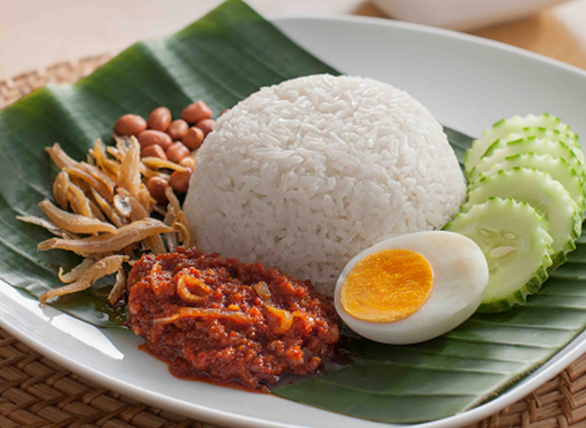

Recipe — How to Make Authentic Malaysian Nasi Lemak
If there’s one street food that unites Malaysians, it’s Nasi Lemak. Served everywhere from roadside stalls to fine dining restaurants, this dish is the perfect balance of creamy, spicy, and savory. Here’s how to make it at home.
Ingredients (Serves 4)
-
For the Rice:
- 2 cups jasmine rice
- 200ml coconut milk
- 2 pandan leaves (knotted)
- 2 cups water
- 1 tsp salt
-
For the Sambal:
- 10 dried chillies (soaked in hot water, seeds removed)
- 5 fresh red chillies
- 3 shallots
- 2 cloves garlic
- 1 tbsp belacan (shrimp paste)
- 2 tbsp tamarind juice
- 2 tbsp sugar
- Salt to taste
-
Accompaniments:
- 4 boiled eggs (halved)
- 100g fried anchovies (ikan bilis)
- 50g roasted peanuts
- Cucumber slices
- Rendang or fried chicken (optional)
Instructions
-
Cook the Coconut Rice:
- Wash the rice until water runs clear.
- Place rice in a rice cooker with coconut milk, pandan leaves, water, and salt.
- Cook until soft and fragrant.
-
Prepare the Sambal:
- Blend dried chillies, fresh chillies, shallots, garlic, and belacan into a smooth paste.
- Heat oil in a pan and fry the paste over medium heat until fragrant.
- Add tamarind juice, sugar, and salt. Simmer until thick.
-
Assemble the Nasi Lemak:
- Place a scoop of coconut rice on a plate.
- Add sambal to the side.
- Arrange boiled egg, fried anchovies, peanuts, and cucumber slices around the rice.
- Serve hot, with rendang or fried chicken if desired.
Tip: For the best flavor, use fresh coconut milk and fry the sambal slowly to deepen its taste.
Watch this step-by-step guide to cooking the perfect Nasi Lemak!
If the video doesn't play, click here to watch on YouTube .